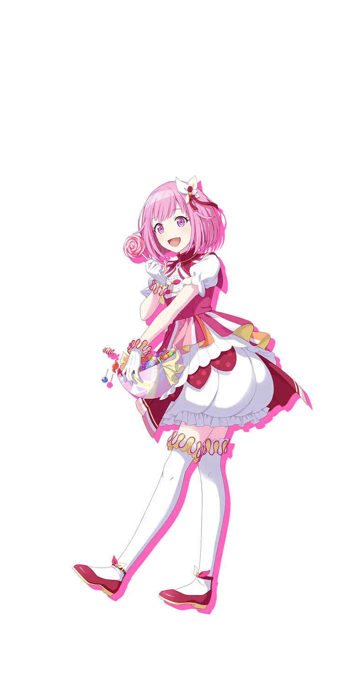

EMU OTORI · WONDERLANDS × SHOWTIME
A little wonder.
A lot of rhythm.
Your stage. Your sound. Your next perfect.
✦ WONDERHOY!
YOUR NEXT FAVORITE BEAT
Music library✧
Find your rhythm. Make it your own.
✧ A little practice. A little progress. A lot of music.Personal demo · v0.2